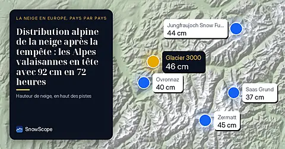
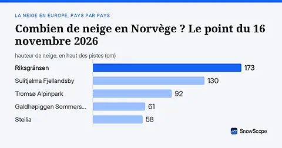
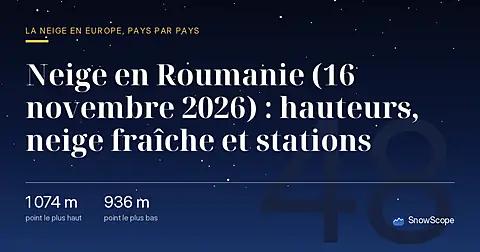

Bulletin neige par pays · La neige en Europe, pays par pays
Bulletin neige par pays · La neige en Europe, pays par pays : tous les bulletins SnowScope, du plus récent au plus ancien. Chaque bulletin est daté et utilise la carte de neige, les prévisions et les stations de mesure du jour.
Bulletins neige · La neige en Europe, pays par pays


Les Alpes suisses couvertes à 71 pour cent blanc contre 18 pour cent en France au 22 novembre. Le Valais affiche 166 cm en 72 heures.

La Grave affiche 171 cm de neige, bien en tête de la moyenne typique de 82 cm pour fin novembre. Les Alpes françaises ont gagné 90 cm en 72 heures au 22 novembre.
Orelle enregistre 74 cm le 21 novembre, conforme à la moyenne saisonnière de 64 cm. La France compte 12 530 km² de couverture neigeuse alors que de nouvelles tempêtes arrivent.

Le manteau blanc de la Suisse s'est étendu de 6 410 km² en une semaine.


La surface enneigée de la France est passée de 6 040 km² à 11 870 km² en une semaine. Le massif du Mont Blanc a reçu 240 cm en 72 heures au 19 novembre.

Les profondeurs de neige en Suisse le 19 novembre sont bien au-dessus de la normale. Glacier 3000 affiche 60 cm, plus du double de la profondeur typique à cette date. La semaine prochaine apportera jusqu'à 125 cm supplémentaires.

De la neige fraîche est tombée sur les hautes montagnes françaises au cours des 72 dernières heures. Le massif du Mont-Blanc en a reçu le plus : 180 cm. Données du 18-11-2026.

Les domaines skiables suisses affichent 142 % de la couverture neigeuse normale pour le 18 novembre. Glacier 3000 domine le classement avec 52 cm, avant l'arrivée de tempêtes majeures.

La neige arrive en France : jusqu'à 87 cm dans la semaine. Couverture, neige fraîche, stations et jours à venir en France le 17 novembre.

De la neige fraîche est tombée de manière inégale sur les montagnes suisses. Les Alpes valaisannes ont reçu 92 cm en trois jours ; l'Oberland bernois 54 cm. Données du 17 novembre.

Neige en Bosnie-Herzégovine le 16 novembre : couverture, neige fraîche, hauteurs selon l'altitude, prochains jours et meilleures stations.

France ou Suisse ? Où la neige est meilleure le 16 novembre. Couverture, neige fraîche, stations et jours à venir en France le 16 novembre.

Neige en Allemagne le 16 novembre : couverture, neige fraîche, hauteurs selon l'altitude, prochains jours et meilleures stations.

Neige en Italie le 16 novembre : couverture, neige fraîche, hauteurs selon l'altitude, prochains jours et meilleures stations.

Neige en Norvège le 16 novembre : couverture, neige fraîche, hauteurs selon l'altitude, prochains jours et meilleures stations.

Neige en Pologne le 16 novembre : couverture, neige fraîche, hauteurs selon l'altitude, prochains jours et meilleures stations.

Neige en Roumanie le 16 novembre : couverture, neige fraîche, hauteurs selon l'altitude, prochains jours et meilleures stations.

Neige en Suède le 16 novembre : couverture, neige fraîche, hauteurs selon l'altitude, prochains jours et meilleures stations.

L'eau douce s'accumule dans les hautes Alpes au cours de la semaine à venir.